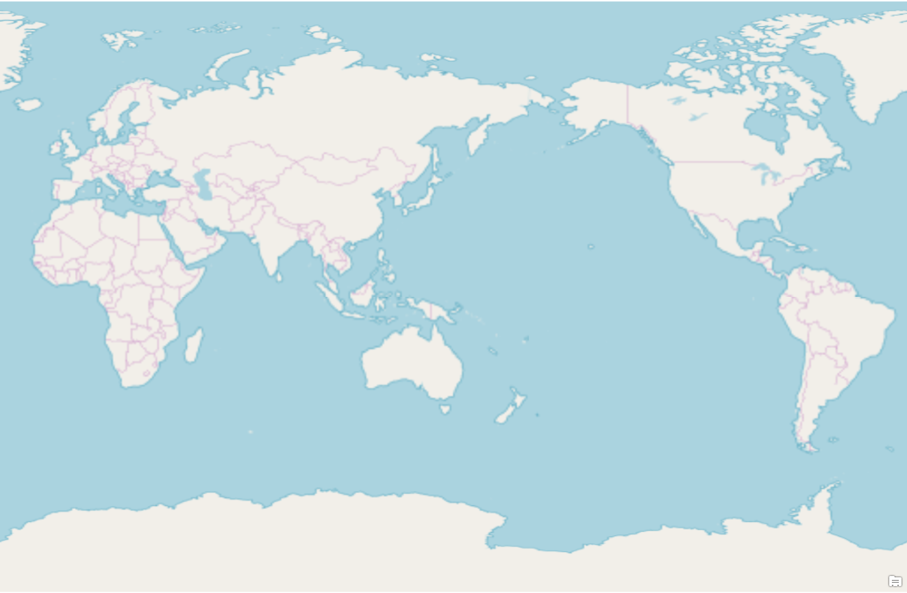

About Me
I am Kana.
I live in Aarhus with my Danish husband and daughter. I am currently studying software engineering at VIA University, and I am working hard every day to raise my child, learn Danish, and study in a different culture.
My Interests

- Travel
- LEGO and jigsaw puzzles
- Crocheting and knitting
- Reading (in Japanese)
I feel that there is a special connection between Denmark and me.
In my hometown of Mihama, Wakayama, Japan, the story of Johannes Knudsen, a Danish missionary, is widely known. When I was young, my grandmother often told me stories about him.
Back then, Denmark seemed like a faraway country with no connection to my own life.
Howlife can be full of surprises. Today, I live in Denmark with my family, and I sometimes find it remarkable that the country I heard about as a child has become my home